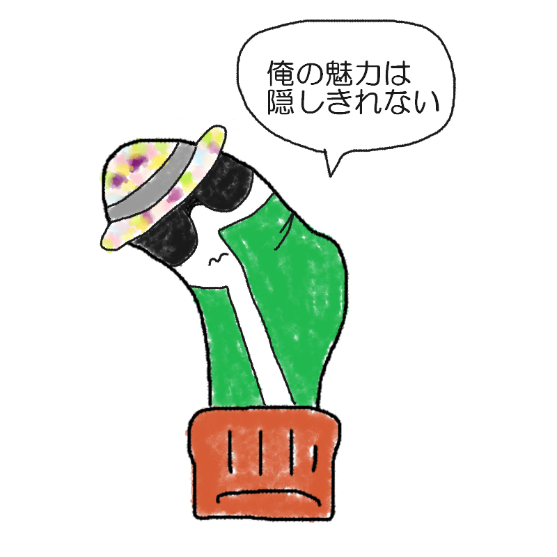

あなたの診断結果
？ ？ ？ （キャラクター名前募集中）足裏の親指にあく人
【目立ちたがり屋の隠密不可能！
ド派手なおしゃれスパイ型】

「潜伏中？いや、このコートの仕立てを見逃すわけにいかないだろ。
……って、いけないいけない、任務中だった！」
目立ちたい気持ちが隠せない、まさかの真面目系お洒落スパイ。
あなたは、「スパイの性質とはおよそ正反対なのに、なぜか任務遂行率だけは100％を叩き出す、奇跡のファッショニスタ・エージェント」です。
「闇に紛れる」という基本概念が頭からすっぽり抜け落ちているのか、どう見てもスパイのいで立ちとは思えないド派手な装いで現場に現れます。
しかし本人はいたって真面目。
ファッションへの追求がやまないため、敵の潜伏捜査中であっても
「あ、そのコートの裏地どこで買いました？」と、うっかり話しかけてしまうほどのマイペースぶりです。
靴下の裏側という過酷な最前線（足裏の親指）にいながらも、目立ちたい欲とトレンドへのアンテナは全開。
どれだけスタイリッシュにキメようとも、摩擦の限界を迎えた親指部分から「こんにちは」と穴が空いてしまうのが、このキャラクターの愛すべき宿命です。
隠密行動はほぼゼロ、でも実力と情熱は本物。
周囲のツッコミを華麗にスルーしながら、今日も我が道を行くお騒がせスパイです。
おしゃれスパイの生態
- スパイなのに隠れる気が微塵もない、ド派手なおしゃれインフルエンサー
- 「それスパイの格好ですか？」と全方向から突っ込まれるド派手なルックス
- どんなにシリアスな潜伏中でも「その服どこの？」と聞いてしまうファッション魂
- 真面目ゆえに仕事（任務）は100％こなすが、足元の親指だけは盛大にほころぶ
ファッションと任務の両立を本気で目指す、異色のエージェントであるあなた。
その突き抜けたスタイルと情熱こそが、まわりの人々の心を射止める最大の武器です。
（※おしゃれの追求と靴下の補強は、ほどほどに両立させましょう。）
最後にひとつ。
どんなに鮮やかに敵を欺こうとも、親指の主張とファッションへの情熱は隠せない。
それスパイのいで立ちですかと
言われようとも、我が道を
ファッショナブルに駆け抜けろ！
このキャラクターに名前をつける
思いついた名前を教えてね！
※このスタンプには日陰に消えたボツキャラが混ざっています
※この診断はただのお遊びです。
※靴下の穴が開く場所には個人差があります。